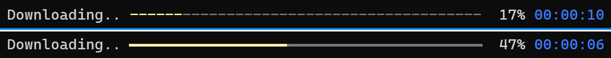

English
English
 Ελληνικά
Ελληνικά
 Deutsch
Deutsch
Windows Installationsanleitung¶
BattleNetPrefill installieren¶
- Öffne die Releases Seite auf Github.
- Lade die aktuellste Version für Windows herunter. Der Dateiname sollte ungefähr so aussehen:
BattleNetPrefill-X.Y.Z-win-x64.zip. - Entpacke die heruntergeladene Datei in ein beliebiges Verzeichnis deiner Wahl auf deinem System.
Optionale Windows Einrichtung¶
Für eine angenehmere Verwendung von BattleNetPrefill und schönere UI Ausgaben wird empfohlen, die Konsole zur Verwendung von Unicode zu konfigurieren.

Da die normale Konsole in Windows kein UTF8 unterstützt, solltest du darüber nachdenken Windows Terminal aus dem Microsoft App Store, or Chocolatey zu installieren.
Sobald Windows Terminal installiert wurde, musst du trotzdem noch Unicode aktivieren, da es standartmäßig deaktiviert ist. Führe den folgenden Befehl in Powershell ein, um Unicode zu aktivieren:
if(!(Test-Path $profile))
{
New-Item -Path $profile -Type File -Force
}
if(!(gc $profile).Contains("OutputEncoding"))
{
ac $profile "[console]::InputEncoding = [console]::OutputEncoding = [System.Text.UTF8Encoding]::new()";
& $profile;
}
Nächste Schritte¶
Wenn du BattleNetPrefill das erste Mal benutzt und eine Anleitung haben willst, schaue dir Getting Started an.
Antworten auf häufig gestellte Fragen und Probleme können unter Frequently Asked Questions gefunden werden.